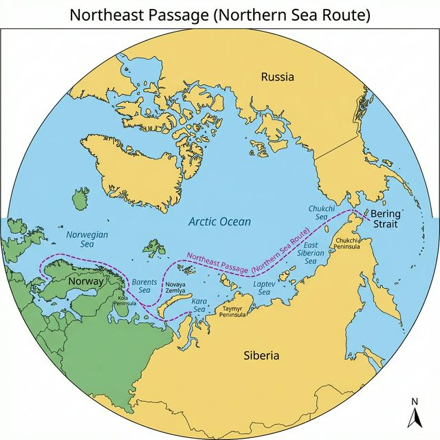

Geography: Humans and Nature
Professional Study Material - English/German Edition
February 2026 | VSN Learning Materials
The average global temperature increased by 0.6°C in the 20th century. While this is a theoretical value, plants, animals, and humans experience the regional manifestations of climate change very differently. The evidence for the warming's consequences has been challenging to establish scientifically due to complex data situations. Nevertheless, the following impacts are widely recognized.
Die mittlere globale Temperatur ist im 20. Jahrhundert um 0,6°C gestiegen. Diese errechnete Größe ist jedoch theoretisch, und Pflanzen, Tiere sowie Menschen erleben die regionalen Ausprägungen des Klimawandels sehr unterschiedlich. Der Nachweis der eingetretenen Folgen der Erwärmung ist aufgrund der komplexen Datenlage wissenschaftlich noch nicht eindeutig nachweisbar. Dennoch lassen sich folgende Auswirkungen des Klimawandels unbestritten feststellen.
Historical photos document the widespread glacier retreat observed in all mountain ranges worldwide. Glaciers act as an early warning system for climate changes, as warmer climates directly correlate with smaller glaciers. A global warming of more than 3°C is projected to cause most mountain glaciers to disappear. Glaciers serve as water reservoirs, releasing meltwater year-round, which is crucial for agriculture and water supply in many regions. Their disappearance threatens water scarcity for millions.
Historische Fotos belegen den Gletscherschwund, der in allen Gebirgen der Erde nachweisbar ist. Gletscher dienen als Frühwarnsystem für Klimaveränderungen, da wärmeres Klima direkt mit kleineren Gletschern verbunden ist. Eine globale Erwärmung von über 3°C würde voraussichtlich zum Verschwinden der meisten Gebirgsgletscher führen. Gletscher fungieren als Wasserspeicher und geben ganzjährig Schmelzwasser ab, das für Landwirtschaft und Wasserversorgung in vielen Regionen entscheidend ist. Ihr Verschwinden bedroht Millionen Menschen mit Wassermangel.
At the peak of the last Ice Age (20,000 years ago), the sea level was 100 m lower than today, rising by about 5 m per century thereafter. If the entire Greenland ice sheet melted, a global sea level rise of 7 m would result long-term. Climate warming also causes water volume expansion. Measurements show a 20 cm rise in the 20th century. With continued warming, a further rise of 2 m by 2100 is projected.
Am Höhepunkt der letzten Eiszeit (vor 20.000 Jahren) lag der Meeresspiegel 100 m tiefer als heute, danach stieg er um etwa 5 m pro Jahrhundert an. Würde der gesamte Eispanzer Grönlands abschmelzen, hätte dies langfristig einen weltweiten Meeresspiegelanstieg von 7 m zur Folge. Eine Klimaerwärmung führt auch zur Ausdehnung des Wasservolumens. Messungen haben einen Anstieg von ca. 20 cm im 20. Jahrhundert ergeben. Bei anhaltender Klimaerwärmung ist ein Anstieg von 2 m bis 2100 zu erwarten.
The living conditions on Earth vary significantly between the poles and the equator. This is primarily due to the differing angle of incidence of sunlight, but also other ecological factors. These include warm or cold ocean currents off the coast and mountain ranges where moist air masses accumulate on the windward side, while dryness prevails in the rain shadow (leeward side). This creates a very complex picture.
Die Lebensbedingungen auf der Erde sind zwischen den Polen und dem Äquator äußerst unterschiedlich. Das liegt in erster Linie am unterschiedlichen Einfallswinkel der Sonnenstrahlen, aber auch an anderen ökologischen Faktoren. Dazu gehören beispielsweise warme oder kalte Meeresströmungen vor der Küste und Gebirge, in deren Luv sich feuchte Luftmassen stauen, während im Regenschatten (im Lee) Trockenheit herrscht. Dadurch ergibt sich ein äußerst vielschichtiges Bild.
Arid (dry, barren): In an arid climate, evaporation exceeds precipitation. Distinction: vollarid (dry all year) and semiarid (dry during part of the year).
Humid (moist): In a humid climate, precipitation exceeds evaporation. Distinction: vollhumid (sufficient precipitation all year) and semihumid (sufficient precipitation during part of the year).
| Landscape Zone | Temperature Zone | Seasons | Water Balance |
|---|---|---|---|
| Rainforest | Tropical | Not pronounced (25°C year-round) | Humid (high precipitation) |
| Savanna | Tropical | Slightly pronounced | Humid/Arid alternating |
| Desert/Semi-desert | Subtropical | Strongly pronounced | Arid (dry year-round) |
| Mediterranean | Subtropical | Hot summers, mild winters | Summer arid, winter humid |
| Deciduous/Mixed Forests | Temperate | Moderately pronounced | Humid (precipitation year-round) |
| Steppes | Temperate | Strongly pronounced | Predominantly arid |
| Boreal Forests/Taiga | Subpolar | Strongly pronounced | Humid (snow in winter) |
| Tundra | Subpolar | Strongly pronounced | Humid (low precipitation, long winters) |
| Cold Desert | Polar | Slightly pronounced | Year-round snow-covered |
Desertification: Progressive spread of deserts, primarily due to over- and misuse, and inappropriate practices.
Desertifikation: Voranschreitende Ausbreitung der Wüsten, vor allem durch Über- und Fehlnutzung und unangepasste Verhaltensweisen.
Steppes are widespread in continental regions, being more humid than deserts but drier than forest regions. The annual precipitation is sufficient for a vegetation type dominated by grasses, but not for trees. Precipitation is irregularly distributed throughout the year, with frequent months-long drought periods. Besides climate, fire and animal husbandry are decisive factors for their formation.
In kontinentalen Gebieten sind die Steppen verbreitet, die feuchter als Wüsten und trockener als Waldregionen sind. Der Jahresniederschlag reicht dort für einen von Bäumen dominierten Vegetationstyp nicht aus. Die Niederschläge sind unregelmäßig über das Jahr verteilt, häufig treten monatelange Dürreperioden auf. Neben dem Klima sind die Faktoren Feuer und Tierhaltung entscheidend für die Ausbildung.
Boreal: Referring to the Northern Hemisphere.
Taiga: Russian term for the boreal forest belt of the northern subpolar zone.
Tundra: Treeless vegetation of mosses, lichens, and shrubs found in (sub)polar climate zones and above the treeline in high mountains worldwide.
While research bemoans the negative consequences of climate change, industry and shipping are quietly anticipating opportunities. Global warming is opening the legendary Northeast Passage - a sea route between Northern Europe and the Far East along the Russian coast. This could reduce travel time from 28 days (via Suez Canal) to just 15-17 days. The route could be navigable for up to three months in summer, accelerating trade flows for East Asian economic powers.
Während die Forschung die negativen Folgen des Klimawandels beklagt, reiben sich Industrie und Handelsschifffahrt in stiller Vorfreude die Hände. Die globale Klimaerwärmung macht den Weg frei durch die legendäre Nordostpassage - ein Seeweg zwischen Nordeuropa und Fernost entlang der russischen Küste. Dies könnte die Reisezeit von 28 Tagen (über Suezkanal) auf nur 15-17 Tage reduzieren. Die Route könnte im Sommer bis zu drei Monate schiffbar sein und die Warenströme der ostasiatischen Wirtschaftsmächte beschleunigen.

| Feature | Antarctic (South) | Arctic (North) |
|---|---|---|
| Area | 52 million km² | Variable (shrinking) |
| Population | 4,000 (research stations) | 1 million total |
| Nature | Ice-covered continent | Pack ice on ocean |
| Highest Peak | Mount Vinson (4,896 m) | N/A |
| Bordering | Oceans | North America, Asia, Europe |